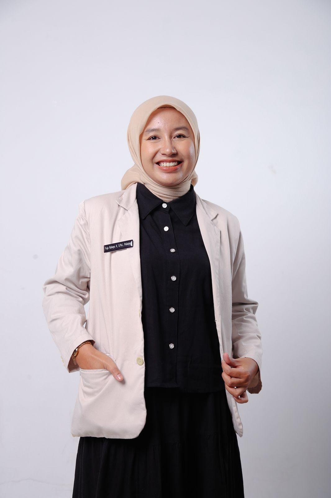
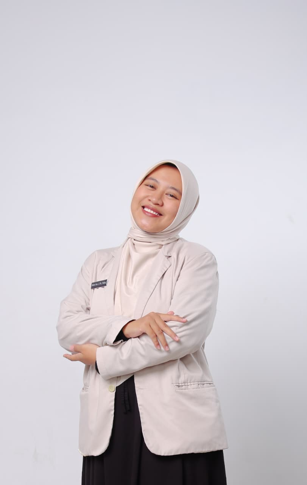
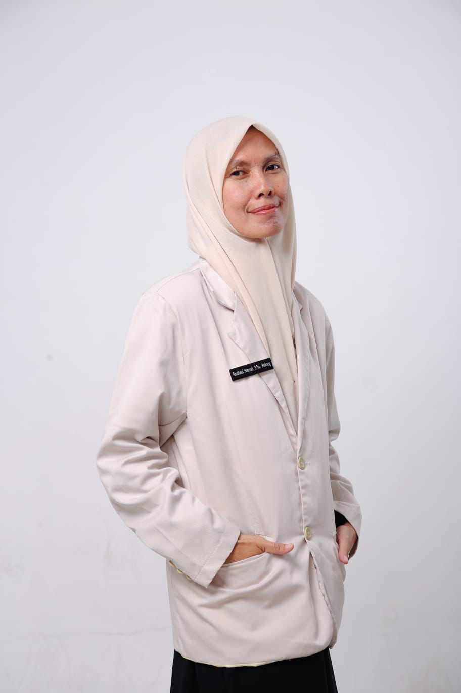
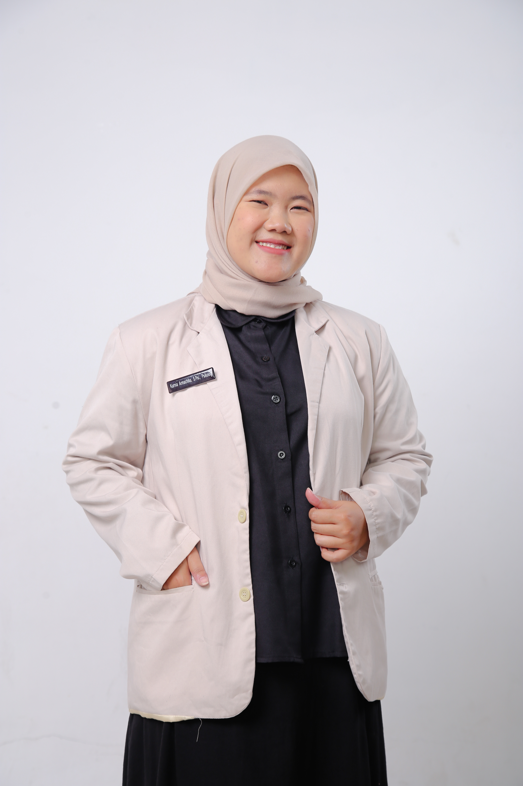

Pratinjau Design System · 01
Hijau sage membawa identitas yang tenang (90% dari layar); oranye terakota hanya muncul pada moment of momentum — langkah aktif booking, countdown, dan ajakan pembayaran (10%). Semua pasangan teks sudah diverifikasi kontras WCAG AA/AAA.
Direkomendasikan dari riset pola Trust & Authority + Conversion untuk layanan kesehatan mental: kontras tinggi, harga transparan, alur booking tanpa friksi, dan batas layanan yang selalu terlihat.
Pratinjau Design System · 02
Pasangan huruf Lora (judul) + Raleway (isi) — profil “Wellness Calm”. Ikon memakai SVG garis (Lucide), menggantikan glyph ✓ dan →.
Warna teks — kontras terverifikasi
#23302E di atas krem13.1:1 AAASpacing & bentuk
Ikon — SVG garis 1.8px
Tipografi — Lora + Raleway
Lora 600 · H1 hero 40–44px · line-height 1.14 · hijau hutan
Lora 600 · H2 seksi 24–26px
Kamu tidak harus punya semua jawaban sebelum mulai bercerita. Seraya menyediakan ruang konseling yang hangat, jelas, dan menghormati batas privasimu.
Raleway 400 · isi 16px · line-height 1.65 · kontras 13.1:1
Eyebrow seksi — Raleway 800 · 11.5px · tracking 0.14em
Dipakai di atas tiap H2 untuk ritme editorial
Rp99.000 / sesi 60 menit
Raleway 800 · harga selalu hijau — oranye hanya untuk penawaran unggulan
Trust pill — ikon centang SVG menggantikan glyph “✓”
Pratinjau Design System · 03
Struktur Trust & Authority: hero misi + bukti kepercayaan, kartu layanan berharga transparan, kutipan psikolog, langkah memulai, dan batas layanan. Seluruh aksi memakai hijau; oranye sengaja absen di beranda.
Ruang aman untuk berproses
Konseling individu bersama psikolog Seraya. Hadir melalui Chat, Call, atau tatap muka di Karangploso, Malang.
Ruang untuk berhenti sejenak,
lalu melangkah dengan lebih sadar.
Layanan peluncuran · SERAYA PULANG
Semua sesi berlangsung 60 menit dan dibuka Senin–Minggu pada jadwal yang tersedia.
Bersama psikolog Seraya
Kelima psikolog Seraya mendampingi sesi dengan pendekatan hangat, empatik, dan client-centered.
Cara memulai
Chat, Call, atau Offline sesuai kebutuhanmu.
Lihat slot yang tersedia dan pilih waktu yang cocok.
Ceritakan topik sesi dan setujui informed consent.
Kirim bukti ke WhatsApp Admin. Invoice terbit setelah verifikasi.
Batas layanan kami. Seraya melayani konseling individu non-darurat untuk usia 18 tahun ke atas. Seraya bukan layanan kegawatdaruratan, diagnosis psikiatri, atau layanan peresepan obat. Butuh bantuan segera?
Pratinjau Design System · 04
Perbaikan UX berdampak terbesar: form panjang tanpa petunjuk progres dipecah menjadi tiga seksi berkelompok, dengan validasi inline, chip topik yang bisa diklik, countdown hold slot, dan CTA pembayaran oranye sebagai satu-satunya momen oranye di alur booking.
☐ Saya memahami Seraya bukan layanan kegawatdaruratan…
☐ Saya menyetujui Informed Consent…
Lanjut ke pembayaranSari · 12 April 1998 · 0812-3456-7890 · ubah
Pilih satu atau beberapa topik yang ingin kamu bawa ke sesi.
128 karakter — memenuhi syarat minimal 50 karakter
Gunakan format Indonesia, contoh 08123456789
Dua persetujuan terpisah — keputusan yang disengaja, bukan satu kotak besar.
Pratinjau Design System · 05
Setelah booking: status sukses hijau, lalu kartu instruksi pembayaran memakai aksen oranye — satu-satunya CTA oranye di layar, memandu mata langsung ke aksi paling penting (kirim bukti via WhatsApp).
Transfer atau scan QRIS sesuai nominal di atas sebelum 14:32 WIB.
Screenshot / foto bukti pembayaran kamu.
Kirim bukti ke Admin Seraya — invoice PDF resmi terbit setelah verifikasi.
Halo Admin Seraya, saya sudah transfer untuk booking: Kode : SRY-2026-0912 Layanan : Individual Online (Call) Jadwal : Sab, 12 Sep · 10.00 WIB Nominal : Rp125.000 Berikut saya lampirkan bukti transfernya. Terima kasih.
Konfirmasi booking dikirim setelah Admin memverifikasi bukti pembayaran. Cancellation & refund ditangani Admin — review case-by-case.
Pratinjau Design System · 06
Target sentuh ≥ 44px, CTA full-width, header ringkas, dan CTA pembayaran oranye menempel di bawah layar saat mengisi form.
Ruang aman untuk berproses
Konseling individu via Chat, Call, atau tatap muka di Karangploso, Malang.
Mulai KonselingOnline
Online
Offline
128 karakter — cukup
Checkbox, chip topik, dan tombol memakai area sentuh minimal 44×44px dengan jarak antar-target ≥ 8px.
Tombol aksi utama melebar penuh agar mudah dijangkau ibu jari; label tetap ringkas.
Saat mengisi form, bar aksi (countdown + Lanjut ke Pembayaran) terkunci di bawah layar — momentum selalu terlihat.
Nav collapse ke menu ikon; brand + langkah aktif (2/3) selalu terlihat tanpa mengambil ruang form.
Pratinjau Design System · 07
Lima psikolog asli Seraya dalam kartu yang mudah dibandingkan: nama tanpa gelar panjang (gelar pindah ke baris kredensial), bio singkat, pil topik keahlian, status siap-booking, dan satu kartu pembantu “Tanya Admin” untuk pengunjung yang bingung memilih. Perhatikan nav: Masuk sudah menjadi tombol, dan setelah login berganti menjadi Profil Saya (detail di Papan 08).
Tim Psikolog Seraya
Kelima psikolog Seraya siap menerima booking konseling individu. Pilih profil untuk melihat fokus pendampingan dan format sesi.

FRPsikolog Umum
S.Psi., Psikolog
Ruang konseling yang hangat untuk mengurai hal-hal yang terasa kusut dan menemukan langkah yang terasa tepat.

RDPsikolog Umum
S.Psi., Psikolog, CHt
Ruang yang hangat, aman, dan tidak menghakimi untuk merasa diterima, didengarkan, dan sedikit lebih lega menjadi diri sendiri.
Psikolog Umum
S.Psi., Psikolog
Rekan perjalanan dan teman berdiskusi dalam ruang yang hangat, terbuka, dan penuh penerimaan.

RHPsikolog Umum
S.Psi., Psikolog, CHt.
Berminat pada penerimaan diri, persiapan pra-nikah, dinamika dan komunikasi pasangan, serta relasi orang tua dan anak.

KMPsikolog Umum
S.Psi., Psikolog
Ruang yang hangat, aman, dan kolaboratif untuk memahami pengalaman dan menemukan langkah bertumbuh yang sesuai.
Ceritakan kebutuhanmu — Admin Seraya akan membantu merekomendasikan pendamping yang cocok.
Tanya AdminCatatan. Semua psikolog menggunakan harga dan lokasi layanan Seraya yang sama. Booking tersedia untuk usia 18 tahun ke atas dan kondisi non-darurat.
Pratinjau Design System · 09
Audit route repo lengkap: auth, profil, layanan, slot booking, legal/safety, dan admin. Semua memakai shell yang sama, tetapi masing-masing punya hierarki dan status yang jelas.
Auth · `/auth/login`
Masuk dengan Google untuk melanjutkan booking dan mengelola profilmu.
Lanjut dengan GoogleDengan masuk, kamu menyetujui Kebijakan Privasi.
Client · `/client/profile`
Data ini dipakai untuk booking dan komunikasi — bukan catatan klinis.
Service · `/pulang` · `/layanan`
Ringkas perbedaan layanan, harga, durasi, dan status tersedia sebelum klien masuk ke booking.
Booking · `/book/:offeringId/slots`
Slot bukan bare text links: tampil sebagai pilihan besar yang bisa dipindai dan disentuh.
Waktu Asia/Jakarta · cutoff booking minimal 2 jam sebelum sesi.
Legal · `/faq` · `/privacy` · `/consent` · `/cancellation`
Halaman legal memakai accordion/section heading yang mudah discan — bahasa tetap hangat, bukan legalese.
Safety · `/safety/crisis`
Panel krisis tetap warm-terracotta, tidak memakai merah alarm. Kontak darurat dibuat paling mudah ditemukan.
Admin workspace · `/admin` · `/admin/bookings` · `/admin/payments`
| Booking | Client | Service | Status | |
|---|---|---|---|---|
SRY-0912 | Sari | Call · 10.00 WIB | pending payment | Review |
SRY-0911 | Raka | Chat · 09.00 WIB | confirmed | Detail |
Pratinjau Design System · 08
Masuk naik kelas menjadi tombol outline (highlight sekunder) — terlihat jelas tanpa merebut perhatian dari Booking Sesi yang tetap solid hijau. Setelah login, tombol yang sama berganti menjadi Profil Saya dengan dropdown akun, jadi tautan “Keluar” tidak memenuhi nav.
Pratinjau Design System · 10
Halaman ini sebelumnya belum punya mockup visual. Sekarang: hero dengan kredensial dan avatar inisial, daftar tiga format sesi dengan tombol Lihat jadwal langsung ke slot picker (bukan ke daftar offering), helper card Tanya Admin, dan trust pill Siap booking.
Profil Psikolog · Seraya Psikologi
S.Psi., Psikolog
Psikolog Umum · Pendekatan hangat dan client-centered
Ruang konseling yang hangat untuk mengurai hal-hal yang terasa kusut dan menemukan langkah yang terasa tepat.
Tentang psikolog
Fokus pendampingan Fuja adalah penguraian hal-hal yang terasa kusut — kecemasan, overthinking, pengelolaan emosi, dan relasi interpersonal.
Topik keahlian
Pendidikan
Seraya melayani konseling individu non-darurat untuk usia 18 tahun ke atas. Untuk kondisi krisis, cari bantuan darurat.
Pratinjau Design System · 11
Stepper ini muncul di /book, /book/:offeringId/slots, /book/:offeringId/intake, dan /booking/:id/confirmed. Memecahkan masalah copy "Cari Jadwal" yang menyesatkan di profil: orang selalu tahu langkah mereka berikutnya.
Step 1 — Pilih layanan
Step 2 — Pilih jadwal (setelah klik "Lihat jadwal")
Step 3 — Data diri (hold countdown aktif di sini)
Step 4 — Konfirmasi (orange money moment)